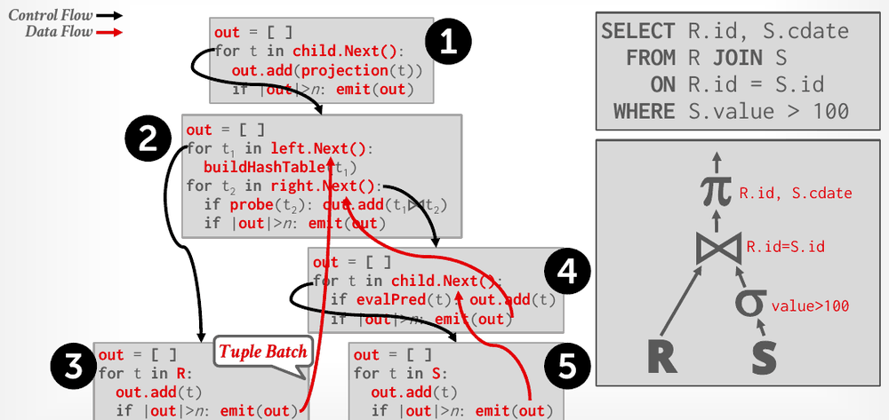
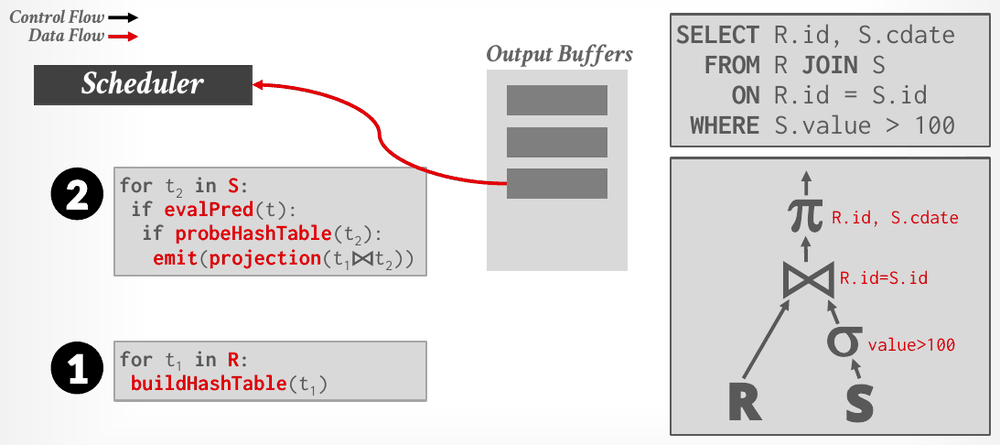
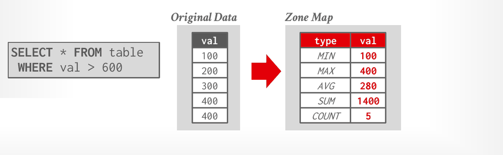
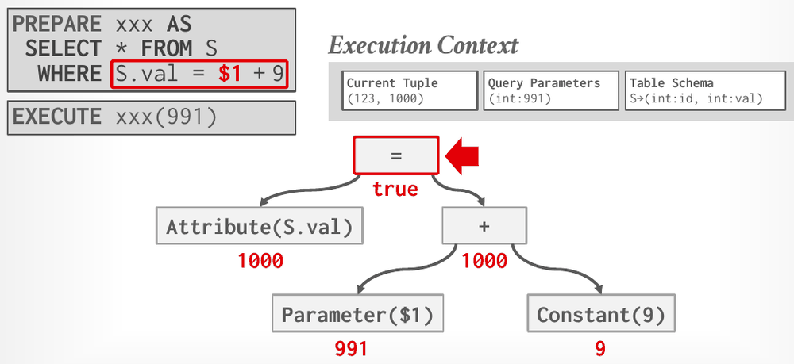

Database Internals in Go · Unit 5 · Lesson 5
Query Execution: Processing Models and Access Methods
Explain how a query plan's operators pass tuples to each other under the iterator, materialization and vectorized models, how the leaves of a plan read a table, and why an update can meet its own tuples twice.
Lessons 1 to 4 gave you the algorithms inside single operators: sorting, aggregation and joins. A query plan wires many operators together, and Lecture #13 is about how that wiring runs: which operator calls which, whether data moves one tuple at a time, in batches or all at once, and how the leaves of the plan get tuples out of a table. Project 3 has you write these operators, which BusTub calls executors, so these choices decide the shape of your next code.
Unit 5, Lesson 3: Lecture #12's example has R with 1,000 pages and S with 500 pages. A block nested loop join gets B = 600 buffer pages. What is the cheapest cost?
Unit 1, Lesson 4: an OLAP query reads the hostname and lastLogin attributes of every tuple in useracct. Which storage model wastes the least I/O on it?
Unit 3, Lesson 4: a scan through a non-clustered B+tree fetches tuples in key order, and the reads keep jumping back to pages it has already read. What fix did Lecture #08 give?
Plans, pipelines and pipeline breakers
The DBMS turns a SQL statement into a query plan: a DAG of operators, often a tree, in which data flows from the leaves toward the root and the root's output is the query's result. Most operators have one or two children. The notes add that the same plan can be executed in several ways, and this lesson is about those ways.
A pipeline is a sequence of operators where tuples continuously flow between them without intermediate storage. A pipeline breaker is an operator that cannot finish until all its children emit all their tuples. The slide lists three: the build side of a join, subqueries, and ORDER BY. A sort can't output its first tuple before it has seen the last one, and a hash join can't probe a hash table that is only half built.
![Left: the definitions of a query plan as a DAG of operators, a pipeline, and a pipeline breaker, with the examples Joins (Build Side), Subqueries, Order By. Right: the query SELECT R.id, S.cdate FROM R JOIN S ON R.id = S.id WHERE S.value > 100 and its plan. A projection sits on a hash join whose left input is R and whose right input is a filter value > 100 over S. A shaded box labelled Pipeline #1 covers R and the join; a second shaded box labelled Pipeline #2 covers S, the filter, the join and the projection.](../assets/slides/L13-pipelines-p5.png)
The notes for this lecture loosely say joins are pipeline breakers. The slide is more exact: only the join's build side is. The probe side streams, which is why S's tuples flow all the way to the projection in pipeline #2.
Processing models
A DBMS's processing model defines how the system executes a query plan and moves data from one operator to the next. It has two parts. Control flow is how the DBMS invokes an operator; data flow is how an operator sends its results. The results can be whole tuples (NSM, as in Unit 1's row stores) or subsets of columns (DSM). Slide 8 names three models and how common each is: the iterator model (most common), the materialization model (rare) and the vectorized or batch model (common).
The iterator model
In the iterator model, every operator implements a Next() function. Each call returns either a single tuple or an end-of-file marker when there are no more. Inside, the operator runs a loop that calls Next() on its children, processes what they return, and hands its own result up. Each operator also has Open() and Close(), which the slide calls "analogous to constructors/destructors, but for operators". The model is also called the Volcano or pipeline model.
![Pseudo-code boxes numbered 1 to 5, one per operator. 1, the projection: for t in child.Next(): emit(projection(t)). 2, the hash join: for t1 in left.Next(): buildHashTable(t1), then for t2 in right.Next(): if probe(t2): emit(t1 join t2). 3, the scan of R: for t in R: emit(t). 4, the filter: for t in child.Next(): if evalPred(t): emit(t). 5, the scan of S: for t in S: emit(t). Black arrows labelled control flow go down from 1 to 2 to 4 to 5; red arrows labelled data flow carry single tuples back up. The query and its plan with pipelines #1 and #2 are on the right.](../assets/slides/L13-iterator-model-p17.png)
Next() calls (black), and one tuple at a time comes back up (red). Operator 2's first loop drains all of R before its second loop pulls anything from S, which is the pipeline breaker from the last figure in code form (Lecture #13, slide 10).Slide 11 gives the reasons almost every DBMS uses it. It is easy to implement and debug, since each operator only needs to know how to call Next() on its children. Output control is easy too: for a LIMIT, an operator simply stops calling Next() once it has enough tuples. It also allows pipelining, where the DBMS pushes each tuple through as many operators as possible before retrieving the next one, so a tuple's data is used while it is still in memory.
"As many operators as possible" means within one pipeline. A tuple of S travels from the scan to the projection without stopping, but a tuple of R stops at the hash table and waits there until the build is done.
#13 Query Execution I, "Query processing models" (8:42), slides 7–11: control flow and data flow, the three models, and the iterator model's trace and trade-offs.
The materialization model
In the materialization model, each operator processes its input all at once and emits its output all at once. Each operator has an Output() function whose return value is every tuple the operator will ever produce, so the DBMS never returns to it for more. MonetDB introduced the model in the 1990s, to process entire columns at a time instead of single tuples. Since an operator can't stop halfway through, the DBMS can instead push hints such as a LIMIT down the plan, so that operators don't scan more tuples than the query needs.
The slides' version also shows operator fusion: the filter on S is folded into S's scan as one loop (for t in S: if evalPred(t): out.add(t)), so the filter's input never exists as a separate result. Slide 14 says the model is better for OLTP, where queries touch only a few tuples, because it has lower execution and coordination overhead and fewer function calls. It is a poor fit for OLAP queries with large intermediate results, which the DBMS must buffer and may have to spill to disk between operators.
Two meanings of "materialization"
Lessons 1 and 3 used early and late materialization for what a sort run or a join's output carries: whole tuples, or record IDs to fetch the tuples later. The materialization processing model is a different idea: how much output an operator returns per call. Say which one you mean.
The vectorized model
The vectorized model, or batch model, is the iterator model with one change: Next() returns a batch of tuples instead of one. Each operator's inner loop fills an output buffer and emits it once it holds more than n tuples. The batch size can depend on the hardware or the query, and each batch holds one or more columns, each with its own null bitmap.

out buffer: every operator, including the leaf scans, collects tuples and emits a batch once more than n have piled up (Lecture #13, slide 16).Slide 17 says the model is ideal for OLAP, and every reason it gives is about the CPU. It greatly reduces the number of Next() invocations per operator. Operators work in tight for-loops over arrays, which compilers know how to optimize and vectorize with SIMD instructions, and an out-of-order CPU runs such loops well because they have no data or control dependencies. The instruction cache also stays hot. HW4's official solution grants that batching can save some I/O, but it puts the main gain in the CPU: less overhead per tuple, better cache use and SIMD.
#13 Query Execution I, "Vectorized model" (27:37), slides 15–17: batches, the pseudo-code, and why batches suit OLAP and modern CPUs.
Pull or push
Every example so far starts at the root and pulls data up by calling Next(). That is top-to-bottom (pull) execution, and most DBMSs implement it. The alternative is bottom-to-top (push): start at the leaves and push data up to the parents, which lets the DBMS fuse the operators of a pipeline into one for-loop.

Next() calls between operators inside a pipeline (Lecture #13, slide 20).Slide 21 compares the two directions:
- Pull (most common): output is easy to control with LIMIT. A parent blocks until its child returns a tuple, every
Next()is a virtual function call, and each call has branching costs. - Push (rare-ish): the DBMS gets tighter control of caches and registers within a pipeline. It may not have exact control of intermediate result sizes, and some operators, such as sort-merge join, are hard to implement this way.
Go's standard library shows both directions. A pull iterator is a Next() bool method that the consumer calls in a loop, as in database/sql's Rows.Next() or bufio.Scanner.Scan(). Since Go 1.23, a push iterator is an iter.Seq[V], a func(yield func(V) bool) that drives the loop itself and calls yield for each value. A for … range over it compiles to that callback, and a break makes yield return false, which is how a push iterator learns about a LIMIT. iter.Pull turns a push iterator back into a pull-style next function.
What BusTub does
Project 3's executors follow BusTub's interface. BusTub's base executor class has Init(), which plays the role of Open(), and Next(std::vector<Tuple> *tuple_batch, std::vector<RID> *rid_batch, size_t batch_size) -> bool. The class comment still says it "implements the Volcano tuple-at-a-time iterator model", but the signature fills a batch, and the Project 3 writeup states the model outright: "BusTub uses the row-based vectorization query processing model, in which every executor implements a Next function to get the next tuple batch result of max BUSTUB_BATCH_SIZE tuples." Each batch also carries the tuples' record IDs (RIDs).
So BusTub is the vectorized model, pull-based, with whole row tuples in each batch. BUSTUB_BATCH_SIZE is 20. The execution engine pulls from the root with while (executor->Next(&tuples, &rids, BUSTUB_BATCH_SIZE)) and appends each batch to the result. The loop ignores the tuples of a call that returns false, so an executor's last, partly filled batch has to come back with true, and the following call returns false with nothing in it.
Project 3 asks you to write executors in this style for scans, modifications, joins, aggregation and sorting, plus two optimizer rules (Lesson 7). The writeup's hint for the hash join repeats this lesson's idea: the build side of a hash join is a pipeline breaker, so you have to decide whether to build the table in Init() or in Next().
Access methods
An access method is how the DBMS retrieves the data stored in a table. Relational algebra has no operator for it, because physical retrieval isn't part of the algebra. The lecture gives three basic approaches: sequential scan, index scan (with many variants), and multi-index scan.
Sequential scans and data skipping
A sequential scan retrieves each page of the table from the buffer pool and iterates over its tuples, evaluating the predicate to decide whether to emit each one. It keeps an internal cursor that tracks the last page and slot it examined. The notes call it almost always the least efficient access method, and slide 24 lists the ways a DBMS speeds it up. You have met some: compression (Unit 1, Lesson 5), prefetching (Unit 2), clustering and sorting (Unit 3, Lesson 4) and late materialization (Lesson 3). Running the scan with several workers in parallel is Lesson 6. The rest are scan sharing, buffer pool bypass, data parallelization (vectorization), materialized views or result caching, code specialization, and data skipping.
Data skipping avoids reading pages that can't contribute to the answer. Slide 25 gives two kinds:
- Approximate queries are lossy. The DBMS runs the query on a sampled subset of the table and returns an approximate result.
- Zone maps are lossless. A zone map holds aggregates for the attribute values in a page, computed in advance. The DBMS checks the zone map first and reads the page only if the page could hold qualifying tuples. The slide notes a trade-off between page size and how well the filter works.

The notes add that zone maps are stored in their own pages, with many entries per zone-map page, and that they help most in cloud systems, where moving data over the network is expensive. Because a zone map is exact for its page, some queries can be answered from the zone maps alone: the minimum of an attribute over the table is the smallest MIN entry, if the zone maps are up to date.
#13 Query Execution I, "Data skipping techniques" (47:33), slides 25–26: approximate queries versus zone maps, and the zone map example.
Index scans and multi-index scans
In an index scan, the DBMS picks an index to find the tuples the query needs. The choice depends on the attributes the index contains, the attributes the query references, the attributes' value domains, how the predicate is composed, and whether the index has unique or non-unique keys. Slide 28's example is a table of 100 students with an index on age and an index on dept, queried with WHERE age < 30 AND dept = 'CS' AND country = 'US':
- If 99 people are under 30 but only 2 are in CS, use the dept index. The age index would fetch 99 tuples, barely better than a sequential scan.
- If 99 are in CS but only 2 are under 30, use the age index.
Either way, the remaining predicates are checked on the tuples the index returns.
A multi-index scan uses several indexes at once. It computes a set of record IDs from each matching index, combines the sets according to the query's predicates (intersection for AND, union for OR), retrieves the records, and applies any remaining predicates. For the students query, it intersects the RIDs for age < 30 with the RIDs for dept = 'CS', fetches those records and checks country = 'US'. The intersection is computed with bitmaps or hash tables; the notes add Bloom filters. DB2 calls this a multi-index scan, PostgreSQL a bitmap scan, and MySQL an index merge.
Modification queries and the Halloween problem
INSERT, UPDATE and DELETE are operators too, and they are responsible for modifying the target table and its indexes. They check constraints either immediately or deferred, and they output record IDs or tuple data (for RETURNING). For UPDATE and DELETE, the child operators pass the record IDs of the target tuples, and the operator must keep track of tuples it has already seen. An INSERT can either materialize tuples inside the operator or insert whatever tuples its child passes in.
Slide 34 shows why the tracking matters. It runs UPDATE people SET salary = salary + 100 WHERE salary < 1100 with an index idx_salary on salary, and the update's child is an index scan on that index. For each tuple, the update removes its index entry, updates the tuple and inserts the new index entry.
![Left: the update operator's loop, for t in child.Next(): removeFromIndex(idx_salary, t.salary, t); updateTuple(t.salary = t.salary + 100); insertIntoIndex(idx_salary, t.salary, t). The tuple (1199, Andy) is shown arriving at it. Below it the index scan, for t in Index_people: if t.salary < 1100: emit(t). Right: CREATE INDEX idx_salary ON people (salary); the UPDATE statement; and a B+tree labelled Index(people.salary) with a red arrow under one leaf. A large skull and crossbones sits in the middle.](../assets/slides/L13-halloween-p72.png)
This is the Halloween problem: an update changes the physical location of a tuple, which causes a scan operator to visit the tuple more than once. It can happen on clustered tables or with index scans. IBM researchers found it while building System R, on Halloween in 1976. The fix is to track the record IDs each query has modified, and skip them when the scan meets them again. It is not a concurrency bug: one query, running alone, updates Andy twice.
In BusTub, the insert, update and delete executors receive tuples and RIDs from their children and maintain the table and all of its indexes, so Project 3's update executor is exactly the operator on this slide.
#13 Query Execution I, "The Halloween problem" (59:30), slides 34–35: the salary trace step by step, and the fix.
Expression evaluation
The DBMS represents a WHERE clause as an expression tree. Its nodes are comparisons (=, <, >, !=), conjunctions and disjunctions (AND, OR), arithmetic operators, constants and parameter values, references to the tuple's attributes, and function calls. To evaluate the tree, the DBMS keeps an execution context that holds the current tuple, the query's parameters and the table's schema, and walks the tree.

S.val = $1 + 9. The attribute node reads 1000 from the current tuple, the parameter node reads 991 from the context, the + node computes 1000, and the root compares the two and returns true (Lecture #13, slide 37).Slide 38 calls evaluating predicates by traversing a tree terrible for the CPU, because every tuple pays for a walk that decides at each node what to do. It is better to evaluate the expression directly, for example by compiling it to a function such as bool check(val) { return (val == 1); }, and better still to vectorize it and evaluate a batch of tuples at once. Slide 39 adds two optimizations a DBMS can apply to the tree itself:
- Constant folding computes a sub-expression on constants once and reuses the result for every tuple:
UPPER(col1) = UPPER('wutang')becomesUPPER(col1) = Constant('WUTANG'). - Common sub-expression elimination computes a repeated sub-expression once: in
STRPOS('x', col1) < 2 OR STRPOS('x', col1) > 8,STRPOS('x', col1)is evaluated once per tuple, not twice.
BusTub interprets expression trees. Its expression classes cover column references (with a tuple index of 0 or 1 to pick a join's left or right side), constants, comparisons, AND/OR logic, arithmetic and string functions, and each node evaluates itself against a tuple and its schema. In the lecture's terms, that is the flexible but slow approach.
Work it out
-
What to think about
The engine keeps calling while Next returns true, and it ignores whatever comes back with false.
The method
Split 45 into batches of at most 20. The partly filled batch must still come back with true, so one more call is needed to say there is nothing left.
The result
4 calls: 20 tuples (true), 20 (true), 5 (true), then an empty batch with false. An iterator-model executor would have needed 46 calls.
-
What to think about
A page can be skipped only if its range rules out every tuple. A page whose range merely overlaps the predicate might or might not hold a match.
The method
Compare each page's MAX with 600. For the minimum, each MIN entry is exact for its page, so the table's minimum is the smallest of them.
The result
Only the second page (MAX 900) must be read; the others have MAX 400 and 120. MIN(val) = 50, read straight from the third page's zone map without touching any heap tuple.
The homework behind these questions
The questions marked HW4 come from CMU's Homework #4: Question 2, with the original figures. Work each one out on paper first, then click the option you got. The quiz tells you at once whether it matches CMU's official answer, and explains why. To compare your working step by step, open the official solutions for Question 2.
Check your understanding
HW4 Q2(a): a DBMS's zone maps are up to date. Which statement is true?
HW4 Q2(b) describes OR predicates that "retrieve a few tuples" as having "high selectivity". Lesson 8 defines selectivity as the fraction of tuples that qualify, and in that sense a few tuples is a low selectivity. The question below says "match only a few tuples" instead; the meaning is HW4's.
HW4 Q2(b): a query on a table of more than 1,000,000 tuples has several OR predicates, each on an indexed column, and together they match only a few tuples. Which access method does HW4 say is preferred?
HW4 Q2(c): in the iterator model, does every tuple flow through the entire sequence of operators in the plan before the next tuple is retrieved?
HW4 Q2(f): on OLAP workloads, where does most of the vectorized model's performance gain come from?
UPDATE people SET salary = salary + 100 WHERE salary < 1100 runs with an index scan on salary as its child. Andy's salary is 999. What goes wrong without protection, and what is Lecture #13's fix?
Primary sources: CMU 15-445/645 Fall 2025 Lecture #13 slides 5–40 and notes (sections 1–5); Homework #4 Question 2(a), (b), (c) and (f) and the official solutions; the Project #3 writeup; BusTub src/include/execution/executors/abstract_executor.h, src/include/execution/execution_engine.h, src/include/common/config.h and src/include/execution/expressions/ at commit d49b823; Lectures #06, #08 and #12 (warm-up); the Go documentation for iter and database/sql.